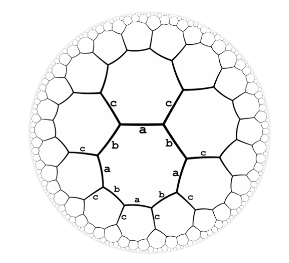

Petrozavodsk Winter-2018. Carnegie Mellon U Contest.
Overview
| Status | A | B | C | D | E | F | G | H | I | J | K |
|---|---|---|---|---|---|---|---|---|---|---|---|
| Contest | 0:44 | 4:05 | (0) | (1) | |||||||
| Upsolve | AC | OK | $\mathcal{O}$ | OK | $\mathcal{O}$ | AC | AC | AC | AC | ||
| Attempt | *10 | + | +5 | * | *3 | *2 | *1 | ||||
| AC count | 44 | 126 | 74 | 71 | 14 | 109 | 27 | 85 | 39 | 67 | 8 |
| Tag | 线段树 | 签到 | 矩阵 | 结论 | 点分治 | DS | 最小圆覆盖 | 状压 | 背包 | dp | |
| Coding | 4857 | 1283 | ? | 916 | ? | ? | 3039 | 923 | 2287 | 1233 | ? |
| Thinking | Mid- | Easy | Mid | Mid | ? | Easy | Mid | Mid- | Mid | Easy | ? |
| Stars | ★ | ★★ | ★ | ★ | ★ |
注：$\mathcal O$ 表示口头通过。
Dodo_kindergarten 队第一次三人正式训练，这一场打的有点自闭啊 ，过了签到题就没怎么想出题目了，但实际上还有很多签到题呢。cyy 和 wzk 一共做出来四道题。这一场说明了我还有许多算法没有做到熟练运用，看来需要努力补充一些短板的。
- Solved during contest:
2/11 - Upsolved:
7/11 - Orally upsolved
9/11 - Rank
114/137 - 新技能-最小圆（球）覆盖 get
[UPD 2019.05.03] 补掉了大傻题 J 题，直接求 Zigzag 公共子序列就 AC 了，题意没说清楚。
[TODO1] Code Problem C, F
[TODO2] Solve Problem E, K
一些资源：
Replay
开局我看的是 H 题，whr 看 B，sl 看 J 题。发现 H 题数据范围不大，商量着要不写一个爆搜试一试，结果我写完之后本地测 $n=24$ 的数据，跑了五分钟都没有跑出来，弃疗了。
我和 whr 看了下 B，发现是可做题，我于是开始写，于 00:44 通过，可是榜上已经过了一大片了。
我发现 F 就是裸的二维数点问题，可是没有整理模板，就自闭了。wzk 几分钟就写完了。这个锅我背，除了线段树之外，我基本上都在做思维题之类的，都不知道多长时间没有写硬核的数据结构题了，这次比赛让我深刻认识到我的数据结构已经弱到了什么地步。
之后陷入无限期的自闭状态。sl 说了 D 题的结论，可是我不太相信。 whr 尝试写 H 题的模拟退火，可惜 WA 了。期间 cyy 他们过了 C 题，可是我没来得及仔细看。我又想写 H 题的另一种搜索，可是也没成功。这一阶段的状态特别不好，感觉什么题都做不出来。
sl 再次要求我听他讲 D 题的结论。我听完之后大致口胡出了一种证明，感觉挺对的。于是开始写，可是有点难写。纠结了好一会实现方式，终于我会了一种比较简单的写法。开工！03：34的时候我们交了第一发，结果 WA on test 160 ，心态炸了。自闭了好一会，发现有个细节的写法略有问题，稍微修改了一下，终于在04：05的时候获得了OK。
看了一会儿新题，感觉也没有别的心思来想题了，于是就跑路了。最后就只有两题滚粗了 QAQ。
Prob B. 签到，set
题意
一条直线上放了 $n$ 个球，每个球的坐标已知，最右边位置 $W$ 处是一堵坚实的墙壁。要求支持下面两种操作：
- 在 $p$ 位置放入新球，如果这个位置有球则忽略。
- 将最左边的球向右打。一个球如果碰到 $x$ 位置的另一个球，则它会在 $x-1$ 的位置停下，然后使 $x$ 位置的求开始向右运动，从而引发连锁反应。一个球撞击到墙则立即停止在 $W-1$ 处。
题解
不妨设最左边球的位置是 $l$ ，稍加模拟即可知道操作本质是将区间 $[l,W]$ 向左循环移位了一个单位。模拟这个过程，只需要考虑将最左边的球加到墙的右边即可。如果要支持放入新球，只需要用一个 set 维护就可以了。
复杂度 $O((n+q)\log n)$
代码
1 |
|
Prob D. 结论，数学，模拟
题意
你有一个超八边形图，每个顶点度数都是 3 ，每条边都同时属于两个八边形环，如下图所示。
这个图中，每条边都有标号，是 $\{a,b,c\}$ 中的一种。标号满足下面的性质：
- 每个节点连出去的三条边的标号互不相同
- 每个八边形环上的标号序列恰好是交错的，即是与 $abababab$ 类似的
现在给出了一个标号序列，问在八边形图中能否找到一个对应的路径，使这个序列对应的边连成一个回路。

题解
结论
我们断言，对于序列中我们尽量消除下面两种子串，那么有回路就等价于最后序列被删空了。
- 直接删除两个相同标号的重复出现的子串，如 $aa$
- 将五元交错子串掐头去尾，如将 $ababa$ 变为 $bab$
证明：
最开始，根据对称性，起点的选择显然是无关紧要的。
首先直观理解一下，第一种子串相当于走一个来回，第二种子串相当于将走得远的路径变成走得近的。事实上第二个操作也可以转化六元环与七元环，直接删除八元环。
然后考虑反证法，如果这两种情况都没出现，这个序列还是一个回路，那么这就说明这个回路走过的每一个环长度都不超过 $4$ ，但是这么走是不可能走回起点的。
实现
上述的做法实现起来还是略有难度，关键点是不重不漏，还要保证复杂度不爆炸。细节见代码吧，这份代码还算是写得非常简洁的。
代码
1 |
|
赛后补题
Prob H. 状压 dp
Description
你有 $n$ 个体积分别是 $w_i$ 的物品，现在要把它们装进最多装体积为 $S$ 的背包里，问至少需要几个背包才能把所有物品都装下。数据范围 $n\leq 24,w_i\leq 10^9$
Solution
一种显然的想法是爆搜，或者模拟退火之类的玄学解法，可是貌似都不奏效。。。
一种比较好的方法是状压 dp 。为了避免后效性，我们给出一种比较强的定义状态的方式，我们采用将背包一个一个填满的方式，而不是几个背包同步填。
定义 $dp[S]$ 表示按照一定顺序删除 $S$ 中元素之后，至少使用的背包数量 $c$，与最后一个背包的剩余体积 $v$ 组成的二元组 $(c,v)$。
这样的话，dp就是可以合并的了，直接按照 $c$ 是第一关键字， $v$ 是第二关键字进行合并即可。转移是显然的。
复杂度 $O(n\cdot 2^n)$
Comment
这道题的一大启示就是，在保证等价的前提下，定义状态的时候可以附加一定条件，使得 dp 转移更加方便高效。
Code
1 |
|
Prob G. 最小圆覆盖
Description
给你了 $n$ 个定义在区间 $[0,T]$ 上的一次函数 $f_i(x) = a_ix+b_i$ ，定义两个一次函数的距离为：
$$
dist(f,g) = \left(\max_{0\leq i\leq T} (f(i)-g(i))\right)^2 + \left(\min_{0\leq i\leq T}(f(i)-g(i))\right)^2
$$
你现在要找一个一次函数 $g(x) = cx+d$ 使得下面的值最小：
$$
\max_{1\leq i\leq n} dist(f_i, g)
$$
你只需要输出最小值就可以了。
数据范围 $1\leq n \leq 200000$
Solution
乍一看，貌似要想一想。那个最大值与最小值一定在定义域的两个端点或者两个函数相交的地方取到。。。等等，不对啊，看清楚之后，我们会发现，那个平方是加在外面的，因此要我们求最值的函数就是 $f(x)-g(x)$ ，两个一次函数之差还是一次函数！那么最值一个在 $x=0$ 处取得，一个在 $x=T$ 处取得。
我们用 $f(0)$ 与 $f(T)$ 两个值来表征一个一次函数，可以发现，如果把 $\big(f(0),f(T)\big)$ 作为点画在二维平面上， $dist(f,g)$ 即为这两个点的欧几里得距离。把题中 $n$ 个点都画出来，那么所要求的就是最小圆覆盖！
不过最小圆覆盖怎么求呢？随机增量法或者模拟退火法都可以实现，这里就用的是随机增量法。有关最小圆覆盖，我单独写了一篇博客，看这里
Code
1 |
|
Prob A. 线段树优化建图+Tarjan SCC
Solution
我们将连边 $a\to b$ 如果炸弹 $a$ 爆炸时能够引爆炸弹 $b$ 。每个炸弹影响的区域都是一个连续的区间，可以通过线段树优化建图将有向图建出来。然后缩点，把得到的 DAG 中入度为 0 的 SCC 最小权值加进答案即可。
怎么支持修改？实际上修改只修改权值，是不改变建出来的图的，只需要每一个SCC都用一个 multiset 维护SCC中的权值即可实现。
Comment
对于这道题，真的不知道该说什么才好。。。基本上是一眼题，但是写起来是真心毒瘤。代码长度4857Byte，花了将近两个小时才写完，然后用了一个小时调试错误，最后才发现就是某一个数组开小了。
警示：
- 遇到RE，永远要首先检查数组大小是否都开足够。不管自己多么自信不会数组开销也要检查！！！
- Windows下本机测试手动扩栈的方法：编译选项
-Wl,--stack,268435456
Code
1 | /* Generated by powerful Codeforces Tool |
以下部分纯属口胡~不过基本都是靠谱的。
Prob. I 背包神题
Description
给出 $n≤5000$ 个物品，第 $i$ 个物品的体积为 $v_i$ ，求所有体积和恰为 $1\leq V\leq5000$ 且物品数量最小的集合中，最小的平均体积，最小的中位数（偶数的中位数是中间靠左的一个），最小的众数个数，最小的极差
Solution
Editorial by HDMMBLZ
下面我们一个一个说：
首先我们得做一遍普通背包得知体积恰为 $V$ 最少多少个物品，设为 $m$ 个
平均值：直接算，$O(1)$
中位数：
算法一：做前缀背包和后缀背包并枚举中位数，检查是否合法时枚举集合种比中位数小的背包体积和，复杂度$O(nV)$,常数为 $3$
算法二：二分中位数，把每个物品价值变成 $inf+(−1)[vi<mid]$，做体积固定价值最小的背包，若结果大于m⋅midm·mid则当前中位数过小，否则过大。此方法虽然多一个 $log$，但巧妙地通过 $\inf $ 把物品数量最小的限制转化掉了，感觉挺有启发
- 众数：
算法一：二分答案然后做背包，复杂度 $O(nVlogn)$
算法二：从小到达枚举众数，每次把可以增加的物品加入背包，复杂度 $O(nV)$
- 极差：
极差是这道题目的精华，两个算法都很有启发性
算法一：将物品按照vivi排序后，考虑滑动窗口，滑动窗口里是要满足存在一个大小为 $m$ 的子集使得体积和为 $V$ ,我们现在这样支持添加物品和删除物品：维护两个栈，栈的每个元素都是一个长度为VV的代表背包的数组，共需要V2V2空间，当我们加入一个物品时，直接加在AA栈栈顶，用原来AA栈栈顶的背包更新构成新栈顶，如果我们要删除一个物品（这个物品是当前区间的第一位），这时如果栈BB不为空，说明要删除的东西是栈BB栈顶，那么直接将栈BB的栈顶弹出即可，如果栈BB是空的，说明要删除的物品是栈底，这时，我们将AA除了栈底以外的元素一个个弹出，并按照弹出的顺序一个个加入栈BB并做背包即可。
我们发现，栈 $A$ 从顶到底元素的 $v_i$ 减小，栈 $B$ 从底到顶元素的 $v_i$ 减小
要查询整个背包某一项，直接合并A、BA、B栈顶所代表的背包即可，合并一次复杂度 $O(V)$
势能分析可得这样做维护两个栈背包的时间是 $O(nV)$
以上方法可以处理所有滑动窗口背包、$n$次查询背包某一个值的问题
算法二：按照vivi从小到大加入背包，把物品价值设为inf−viinf−vi(更新dp[vi]dp[vi]时)，infinf（其他时候），枚举最大值直接查询即可，不得不说这个方法也很棒。
总复杂度 $O(nV)$
Code
这里的实现很多都偷懒了，用的是带 log 的做法。
1 | /* Generated by powerful Codeforces Tool |
Prob. C AC自动机+高斯消元 or 矩阵快速幂
将这两个串的 AC 自动机建出来，然后问题就变为类似在这个有向图上（带 fail 链接）随机游走的问题。
Prob E. 点分治
不会。